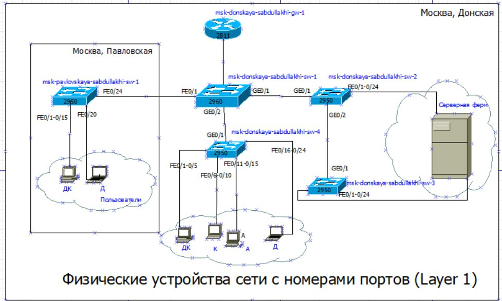
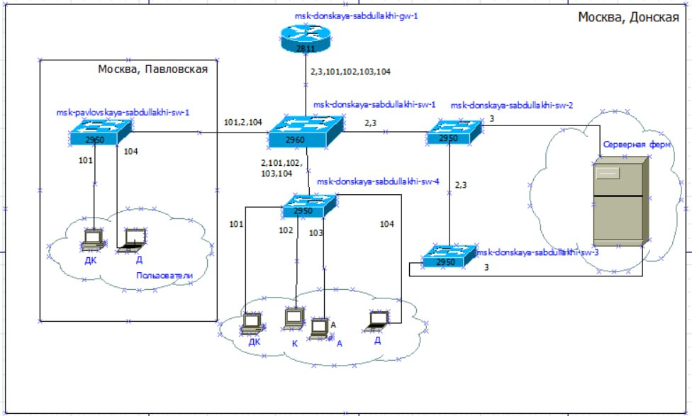
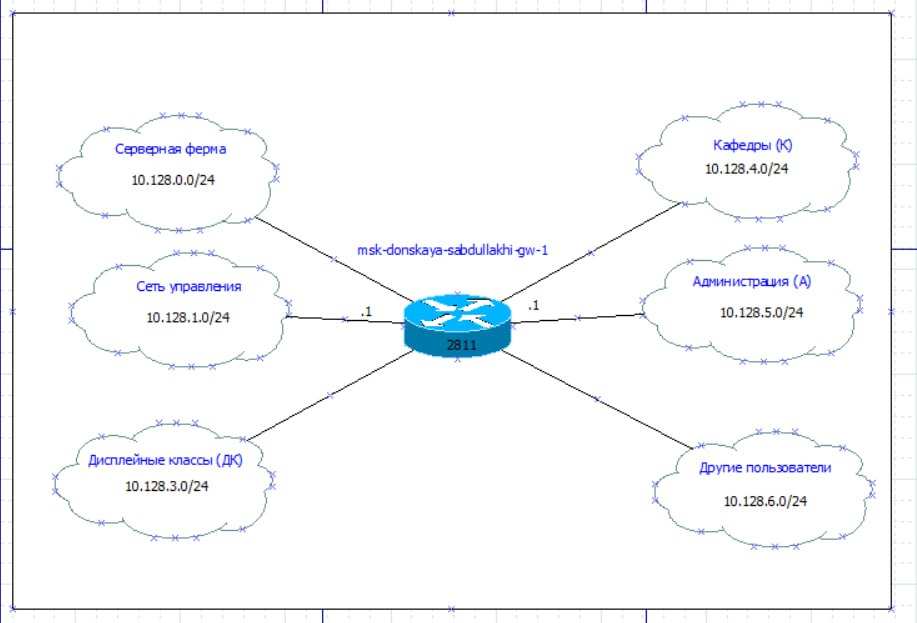
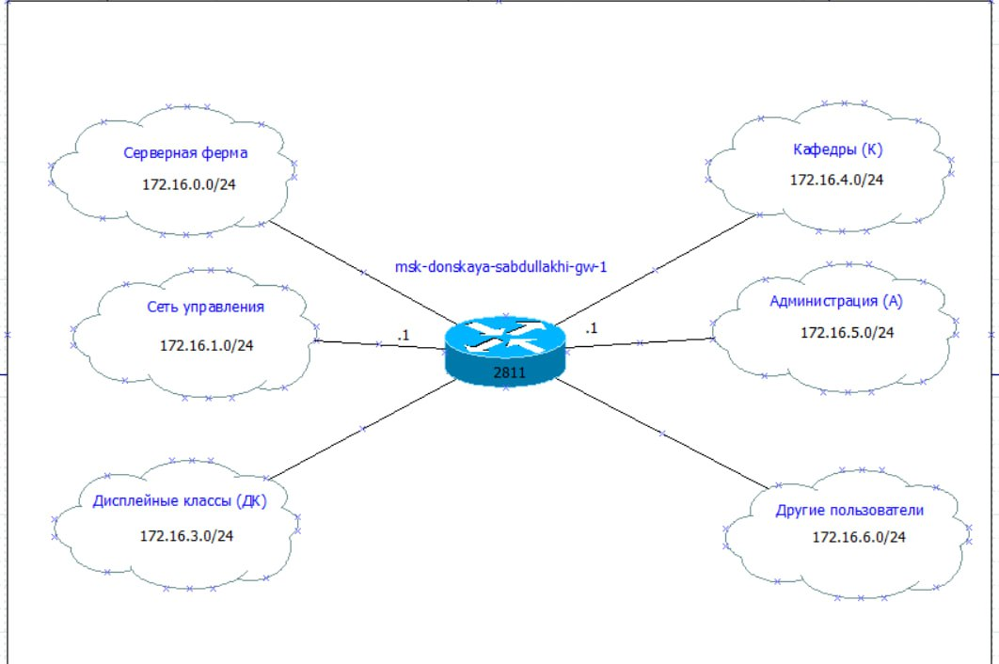
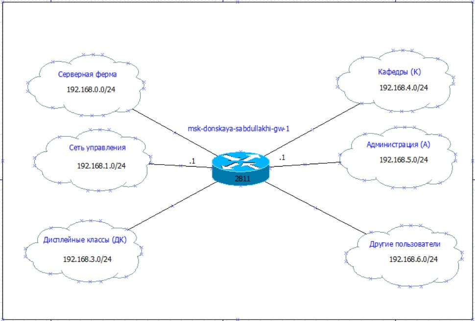

Нужно было разобраться, как проектируется локальная сеть с нуля. Не про- сто нарисовать картинку, а продумать всё до мелочей: как соединять устройства, как разделять трафик между отделами и как назначать IP адреса, чтобы в сети не было хаоса и её было легко обслуживать.
нарисовано схемы в графическом редактор для адресов: - 10.128.0.0/16 - 172.16.0.0/12 - 192.168.0.0/16
и построена таблицы: - Таблица VLAN - Таблица IP адресов - Таблица портов подключения оборудования - Регламент выделения IP-адресов внутри подсети /24





В ходе работы я научилась проектировать локальную сеть. Главное, что я поняла Я разобралась, как разделять физическую инфраструктуру и логическую, как использовать VLAN для изоляции трафика, как разрабатывать IP план и состав- лять документацию в виде таблиц. Ещё я убедилась, что порядок в распределении адресов очень помогает — добавлять новые устройства в сеть становится просто и без ошибок.